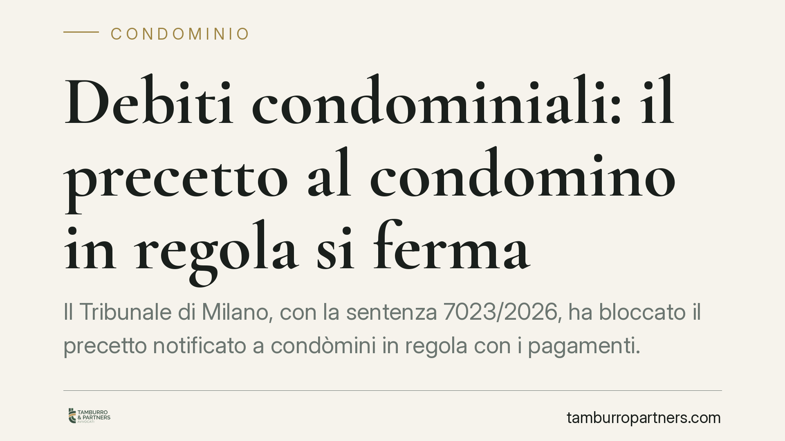

Debiti condominiali: il precetto al condomino in regola si ferma
Il Tribunale di Milano, con la sentenza 7023/2026, ha bloccato il precetto notificato a condòmini in regola con i pagamenti. Il creditore del condominio non può rivolgersi a chi ha già versato la propria quota se prima non ha effettivamente escusso i morosi, provandone l'incapienza. Una conferma che rafforza la tutela del condomino solvente e richiede maggior rigore al creditore.

Il caso
Un creditore del condominio, munito di titolo esecutivo, notifica l'atto di precetto ad alcuni condòmini. Peccato che questi fossero in regola con il versamento delle quote. I destinatari si oppongono e il Tribunale di Milano (sentenza 7023/2026) dà loro ragione: il precetto si ferma.
La decisione non introduce principi inediti, ma li applica con fermezza. Il condomino che ha pagato non è un bancomat a disposizione del creditore quando il recupero verso i morosi diventa complicato.
Inquadramento normativo
La norma di riferimento è l'articolo 63, comma 2, delle disposizioni di attuazione del codice civile. La disposizione prevede che i creditori possano agire nei confronti dei condòmini in regola con i pagamenti solo dopo aver escusso gli altri condòmini, cioè quelli morosi.
In termini pratici, l'obbligazione del condomino solvente è sussidiaria ed eventuale: scatta solo se, e nella misura in cui, l'azione verso i morosi non ha prodotto risultati. Non basta che il creditore affermi di non essere riuscito a recuperare: deve allegare e provare di aver agito concretamente contro i morosi e che questi siano incapienti, cioè privi di beni sufficienti a soddisfare il credito.
L'atto di precetto che salta questo passaggio è attaccabile con l'opposizione all'esecuzione prevista dall'articolo 615 del codice di procedura civile. È lo strumento con cui si contesta il diritto del creditore a procedere con l'esecuzione forzata.
Perché la decisione conta
Il punto centrale è l'onere della prova. Il Tribunale di Milano ribadisce che non è il condomino in regola a dover dimostrare la propria estraneità al debito. È il creditore a dover documentare di aver prima tentato, senza successo, il recupero verso i morosi.
Questo sposta l'equilibrio in favore di chi paga puntualmente. Troppo spesso il creditore sceglie la via più comoda: aggredire il condomino solvente, tipicamente il più solido patrimonialmente, perché è più facile ottenere soddisfazione. La sentenza chiude questa scorciatoia.
Per il condomino in regola significa poter contestare efficacemente un precetto che arriva senza che il creditore abbia prima agito verso i reali debitori. Per il creditore significa dover costruire con cura il percorso di recupero, raccogliendo prove della morosità e dell'incapienza prima di rivolgersi a chi ha pagato.
Il ruolo dell'amministratore
La pronuncia riguarda anche la gestione condominiale. L'amministratore ha l'obbligo di attivarsi tempestivamente per il recupero delle quote insolute: un recupero tardivo o trascurato espone l'intero condominio e, a cascata, i condòmini solventi.
Tenere aggiornato il bilancio, documentare le solleciti e avviare per tempo le azioni di recupero verso i morosi non è un adempimento burocratico. È la condizione che consente al condominio di gestire correttamente i rapporti con i creditori ed evitare contenziosi tra condòmini.
Cosa fare in concreto
- Verifica la tua posizione. Se ricevi un precetto per debiti condominiali, controlla subito di essere in regola con i versamenti: conserva ricevute, bonifici e verbali assembleari.
- Richiedi la documentazione del recupero. Fatti dire dall'amministratore se e come il creditore ha agito verso i morosi. L'assenza di escussione preventiva è il punto debole del precetto.
- Valuta l'opposizione ex art. 615 c.p.c. Rispetta i termini: l'opposizione ha scadenze stringenti, agire con ritardo può precludere la tutela.
- Amministratori: documentate il recupero. Tracciate solleciti, decreti ingiuntivi e pignoramenti verso i morosi. Senza prova dell'escussione, il creditore non può ribaltare il debito sui solventi.
- Coinvolgete l'assemblea. Informate i condòmini sulle morosità e sulle azioni intraprese, così da gestire in trasparenza eventuali richieste dei creditori.
---
*Contributo informativo a cura di Tamburro & Partners - Avv. Giuseppe Tamburro. Non costituisce parere legale.*
Ogni condominio ha una storia a sé.
Se gestisci un'amministrazione e vuoi un confronto su una specifica questione condominiale, scrivi allo studio. Ti rispondiamo entro un giorno lavorativo.